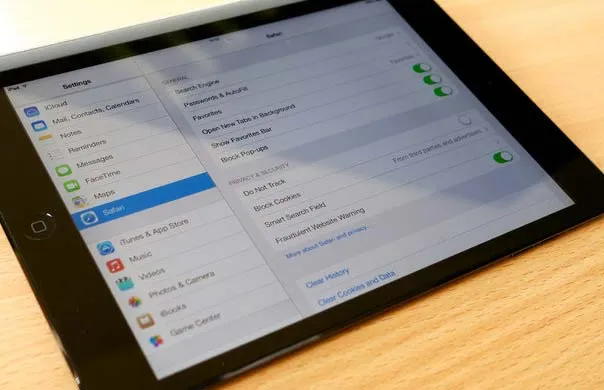

How to Delete Browsing History on iPad Pro Using Safari & Settings
If you're having trouble clearing your browsing history on your iPad Pro, look no further! Whether it's for maintaining your privacy or simply keeping things tidy, here are two easy methods to delete your browsing history. You can either use the device's Settings or the Safari web browser itself.

Method 1: Deleting Browsing History on iPad Pro Using Settings
This method is straightforward and can be done in a few easy steps:
- Go to Settings: Locate and tap the Settings app on your iPad Pro.
- Go to Safari: Scroll down to the Safari icon, resembling a compass, and tap it.
- Find Clear History and Website Data: Look for the option labeled "Clear History and Website Data" and tap on "Clear History."
- Click Clear History and Data: Confirm your choice by clicking the button again. This will erase all your browsing history.
Method 2: Deleting Browsing History Using Safari
If you prefer to use the Safari browser itself, here's how:
- Open Safari browser: Launch Safari on your iPad Pro.
- Tap on the Bookmark: Locate the Bookmark icon and tap it to access your History.
- Tap on Clear: You'll see an option to "Clear" at the bottom right of the page. Tap it.
- Click Confirm: Select your desired time range for deletion, such as "last hour," "today," "today and yesterday," or "all time." Then, click confirm.
- History will be Deleted: Once confirmed, all the selected history will be deleted.
With these two easy-to-follow methods, you can keep your browsing history on your iPad Pro exactly how you want it. Privacy matters, and Apple makes it simple to manage yours. Feel free to choose the method that best fits your needs and happy browsing!